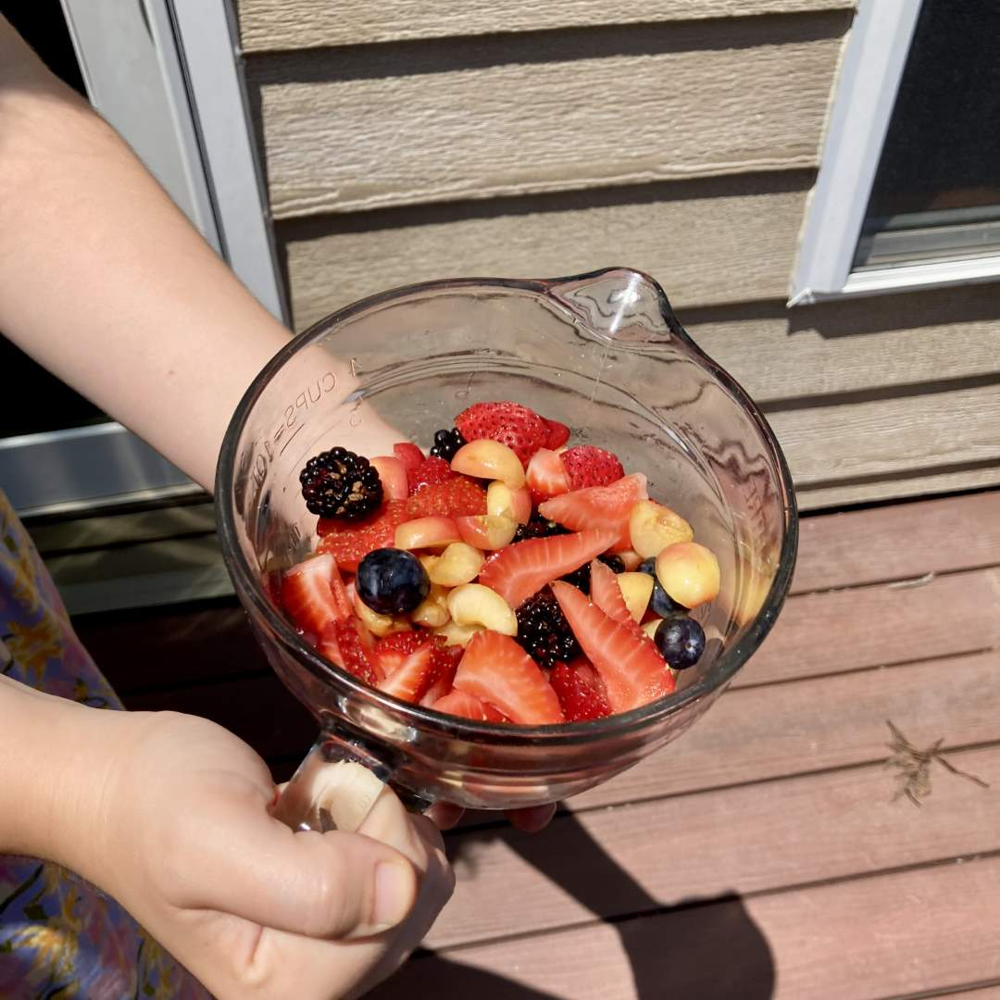

Pie 4: Cherry-Berry Tart
2023-07-20Tart recipe: “Free-Form Summer Fruit Tart” from p. 583 of The America’s Test Kitchen Family Cookbook.
Taste:
Difficulty:
Vibes:
Suggested pairings: the rest of breakfast
But soft, what tart in yonder oven bakes?
You heard it here first, folks. Our Pie-A-Week project will include dishes without the word “pie” in the name. We had planned this from the beginning, but we didn’t want to scare anyone away too early. The term is so vague! The Boston cream pie is a cake and the shepherd’s pie is a casserole. Our working definition for pie is something like “a thick dish with a substantial mass of filling and a starchy crust on at least one side.” This excludes the Boston cream pie but includes the shepherd’s pie as well as most tarts, meat pasties, deep-dish pizza, empanadas, turnovers, and calzones. Being able to make a broad variety of dishes will be important for our perseverance in this project.
Katie Beth and I went to our blackberry patch hoping to find enough for a blackberry pie. Sadly, upon inspection we found the vast majority pillaged by animals or shook off by a recent thunderstorm. We collected the remaining handfull and decided to mix in blueberries, strawberries, and cherries for a cherry-berry tart.
This recipe is different than fruit pies because it calls for a sort of fruit package sitting on a flat baking sheet instead of in a walled dish. The crust was denser and less flaky than a traditional pie crust. This was necessary to hold in juicy filling without much help from the pan. It was quite difficult to roll out but was ultimate quite tasty.

After folding up the edges and sprinkling on sugar, we baked it for 40 minutes, until the filling was boiling (some even poured over the edge). We waited until the tart was room temperature to slice and munch. Katie Beth especially loved the diversity of flavors and textures in the fruit filling. I was most pleased with the tender but dense crust. We recommend.